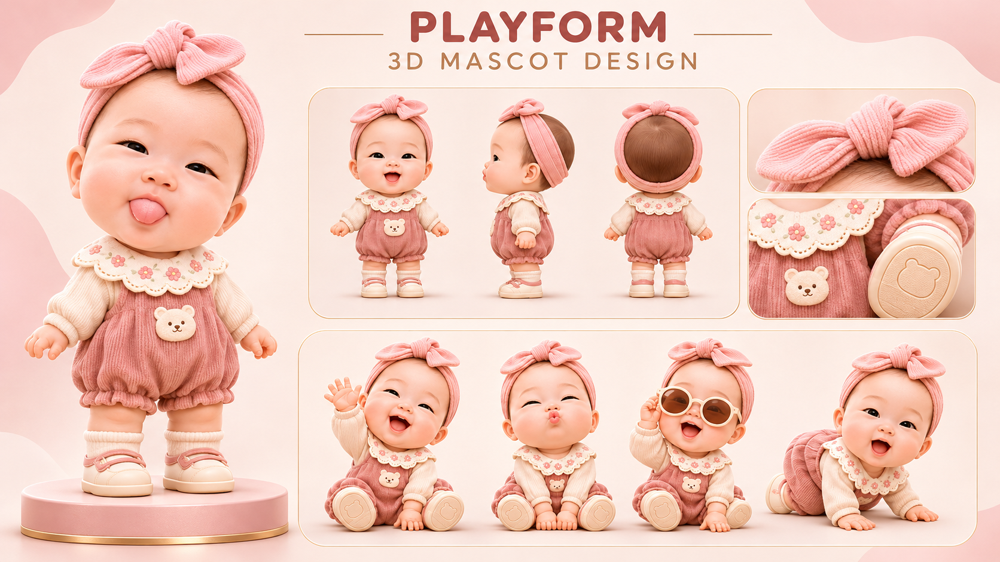

主角 IP｜三視圖、動作與材質設計
LULO Q 版小女孩（粉色蝴蝶結、蕾絲領、珊瑚粉洋裝）立體造型探索
視覺成果與保留理由
完整呈現小女孩角色的正面、側面、四分之三角度及 4 種生動表情（好奇、微笑、驚喜、專注），比例一致，且嚴格維持粉色大蝴蝶結、精緻蕾絲翻領與珊瑚粉洋裝的造型特徵。可作為後續繪本與 3D 角色製作的一致性參考母稿。
限制與待重繪／後製缺口
目前為高解析 3D 渲染圖板，非具備骨架綁定 (Rigging) 與可動控制器之正式量產 3D 資產；亦非 SHOT 03（三角色同尺度對比）的最終輸出。需作為角色造型參考，不能宣稱動畫工程已完工。
規格：1672 × 941 RGB PNG (2,179.9 KB) / JPG (543.1 KB)
SHA-256 (PNG)：
SHA-256 (JPG)：
SHA-256 (PNG)：
ae40d8e2306125ba031268deaf454102bcd8fb2774b2a9256cc13b2a089865c3SHA-256 (JPG)：
00dbf8a819defe1ae231907949c5e851da75d6b5ff20054627bb0b4987687f9c